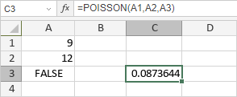

POISSON funkcija
POISSON funkcija je jedna od statističkih funkcija. Koristi se za vraćanje Poissonove distribucije.
Sintaksa
POISSON(x, mean, cumulative)
POISSON funkcija ima sledeće argumente:
| Argument | Opis |
|---|---|
| x | Broj događaja, numerička vrednost veća od 0. |
| mean | Očekivana numerička vrednost veća od 0. |
| cumulative | Oblik funkcije, logička vrednost: TRUE ili FALSE. Ako je cumulative TRUE, funkcija će vratiti kumulativnu Poissonovu verovatnoću; ako je FALSE, vratiće funkciju mase verovatnoće Poissonove distribucije. |
Napomene
Kako primeniti POISSON funkciju.
Primeri
Slika ispod prikazuje rezultat koji vraća POISSON funkcija.
